Pagina se întinde acum până la 480. La 390 totul e ca în Figma. Mai late de atât, patru locuri arată altfel decât în design.
2Banda „Рекомендовані ліги” pe /sport
ACUM
Plăcuțele se opresc
La 390 banda iese din ecran spre dreapta, ca în design. De la 440 în sus se oprește înainte de margine și rămâne un gol.
390px

440px
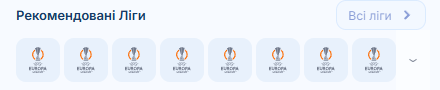
480px
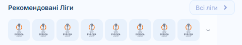
390: 90px înalt, se derulează
440: 90px înalt, 10px gol în dreapta
480: 90px înalt, 50px gol în dreapta
ARECOMANDAT
Mai multe plăcuțe
10 plăcuțe în loc de 8. Banda iese din ecran la orice lățime, ca la 390.
390px

440px
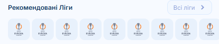
480px
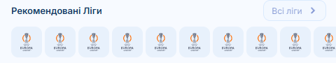
390: 90px înalt, se derulează
440: 90px înalt, se derulează
480: 90px înalt, se derulează
Câștigi: la 390 nu se schimbă niciun pixel vizibil, iar la 480 arată ca designul. Pierzi: toate plăcuțele au aceeași siglă Europa League, singura din Figma. Acum sunt 10 la fel în loc de 8.
B
Plăcuțe distanțate
Tot 8 plăcuțe, dar spațiul dintre ele crește până umple rândul.
390px
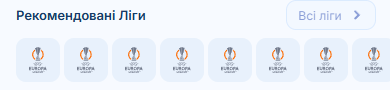
440px
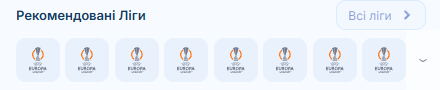
480px
390: 90px înalt, se derulează
440: 90px înalt, 0px gol în dreapta
480: 90px înalt, 0px gol în dreapta
Câștigi: fără plăcuțe în plus. Pierzi: la 480 spațiul dintre plăcuțe e 11px în loc de 4, și se vede tot rândul, deci nu mai pare că banda continuă.
C
Plăcuțe mai mari
Plăcuțele cresc odată cu telefonul, cum cresc deja cartonașele de joc.
390px

440px
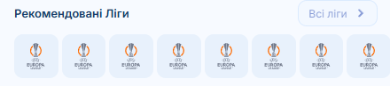
480px
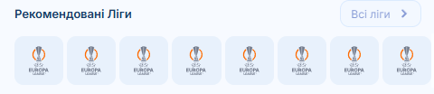
390: 90px înalt, se derulează
440: 97.7px înalt, se derulează
480: 103.8px înalt, se derulează
Câștigi: banda iese din ecran ca în design. Pierzi: banda devine mai înaltă, 90px → 104px la 480, iar plăcuțele ies mai mari decât iconițele sporturilor de deasupra.
3Rândul de meci pe /sport: ● EP și 1 / Н / 2
ACUM
10px lângă 12px
Ora a trecut la 12px (decizia ta), dar ● EP, pe același rând, și 1 / Н / 2, deasupra cotelor, au rămas la 10px, ca în Figma.
390px
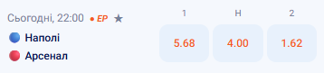
440px
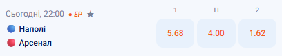
480px
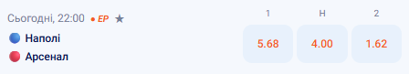
390: 81px înalt, EP 10px, 1/Н/2 10px
440: 81px înalt, EP 10px, 1/Н/2 10px
480: 81px înalt, EP 10px, 1/Н/2 10px
A
Totul la 12px
● EP și 1 / Н / 2 trec la 12px.
390px
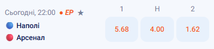
440px
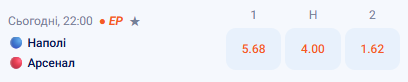
480px
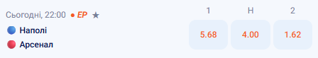
390: 82px înalt, EP 12px, 1/Н/2 12px
440: 82px înalt, EP 12px, 1/Н/2 12px
480: 82px înalt, EP 12px, 1/Н/2 12px
Câștigi: un singur corp de literă în tot rândul. Pierzi: rândul crește cu 1px (81 → 82), iar 1 / Н / 2 devin la fel de mari ca numele echipelor.
BRECOMANDAT
Doar ● EP la 12px
Rândul cu ora devine uniform. 1 / Н / 2 rămân la 10px, ca în design.
390px
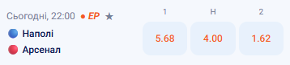
440px
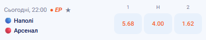
480px
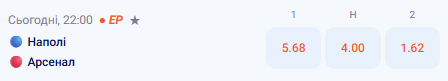
390: 81px înalt, EP 12px, 1/Н/2 10px
440: 81px înalt, EP 12px, 1/Н/2 10px
480: 81px înalt, EP 12px, 1/Н/2 10px
Câștigi: rândul care se vedea amestecat e rezolvat, iar înălțimea rămâne 81px. Pierzi: 1 / Н / 2 rămân mici. Dar stau singure deasupra cotelor, lângă nimic de 12px.
C
Amândouă la 11px
Un pas la mijloc, pentru ambele.
390px
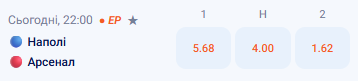
440px
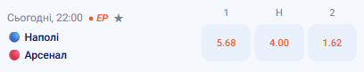
480px
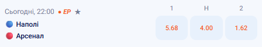
390: 81px înalt, EP 11px, 1/Н/2 11px
440: 81px înalt, EP 11px, 1/Н/2 11px
480: 81px înalt, EP 11px, 1/Н/2 11px
Câștigi: diferența de mărime se vede mai puțin. Pierzi: 11px nu apare nicăieri altundeva în rând, deci rândul are acum trei mărimi: 11, 12 și 14.
4Furnizorii din căutare (?panel=search)
ACUM
Rândul nu se umple
5 cercuri a câte 80px ocupă 400px. La 390 rândul se derulează, ca în design. La 480 rămân 48px goi în dreapta, iar barele de dedesubt tot arată că s-ar derula, deși nu e nimic de derulat.
390px
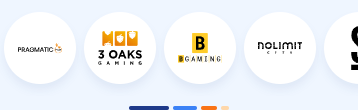
440px
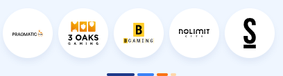
480px
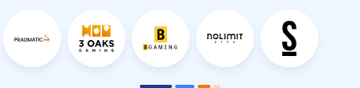
390: 110px înalt, se derulează
440: 110px înalt, 8px gol în dreapta
480: 110px înalt, 48px gol în dreapta
ARECOMANDAT
Cercurile se răsfiră
Cercurile rămân de 72px, dar fiecare primește o parte egală din rând.
390px

440px
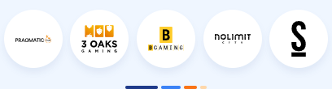
480px
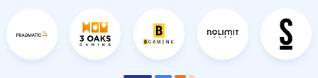
390: 110px înalt, se derulează
440: 110px înalt, 0px gol în dreapta
480: 110px înalt, 0px gol în dreapta
Câștigi: la 390 nu se schimbă nimic, iar peste 440 rândul e plin. Pierzi: la 440 și 480 rândul nu se mai derulează, deci barele de sub el nu mai au ce arăta.
B
Cercuri mai mari
Totul crește cu telefonul, iar rândul se derulează la orice lățime.
390px

440px
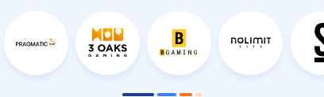
480px
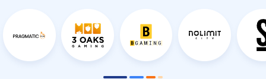
390: 110px înalt, se derulează
440: 122.3px înalt, se derulează
480: 132.1px înalt, se derulează
Câștigi: barele de sub rând au sens la orice lățime. Pierzi: panoul crește, 110px → 132px la 480, iar cercurile ies mai mari decât restul panoului.
C
Pe mijloc
Cele 5 cercuri se centrează, cu gol egal în stânga și în dreapta.
390px

440px
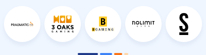
480px
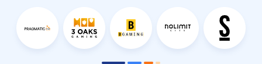
390: 110px înalt, se derulează
440: 110px înalt, 4px gol în dreapta
480: 110px înalt, 24px gol în dreapta
Câștigi: golul nu mai stă doar într-o parte. Pierzi: rămân tot 24px goi pe fiecare parte la 480, iar barele arată în continuare o derulare care nu există.
5„Наші партнери” din footer
ACUM
3 + 4 la 480
La 390 și 440 logourile stau 3 + 3 + 1, ca în design. La 480 al patrulea încape pe primul rând și se rearanjează în 3 + 4.
390: 182px înalt, rânduri 3+3+1
440: 182px înalt, rânduri 3+3+1
480: 134px înalt, rânduri 3+4
ARECOMANDAT
3 + 3 + 1 mereu
Rândul nu primește niciodată loc pentru 4 logouri.
390px

440px
480px
390: 182px înalt, rânduri 3+3+1
440: 182px înalt, rânduri 3+3+1
480: 182px înalt, rânduri 3+3+1
Câștigi: la orice lățime arată ca designul. Pierzi: la 480 blocul e mai înalt decât acum, 134px → 182px, adică exact cât la 390.
B
Logouri mai mari
Logourile cresc cu telefonul și rămân 3 + 3 + 1.
390px

440px
480px
390: 182px înalt, rânduri 3+3+1
440: 195.3px înalt, rânduri 3+3+1
480: 206px înalt, rânduri 3+3+1
Câștigi: umplu lățimea. Pierzi: footerul crește, 182px → 206px la 480, iar logourile partenerilor ies mai mari decât cele de plată de deasupra.
Pozele mai late decât ecranul tău sunt micșorate ca să încapă. Pe un telefon de 440, doar pozele de 480 sunt micșorate.